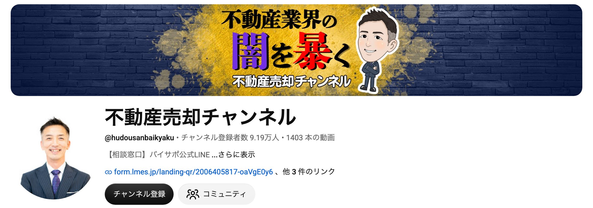
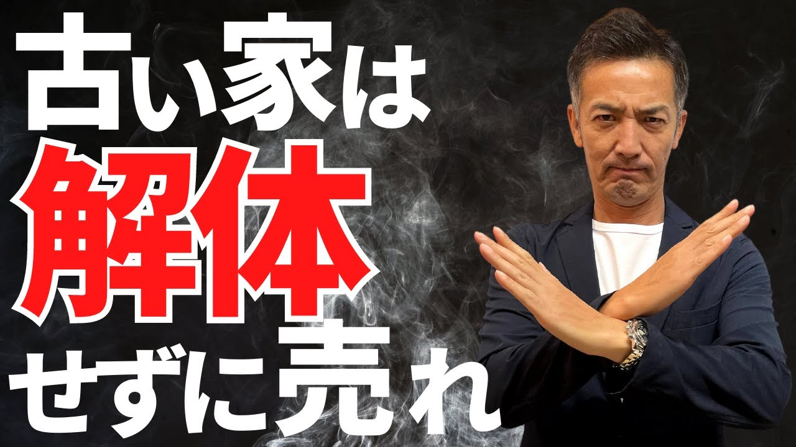
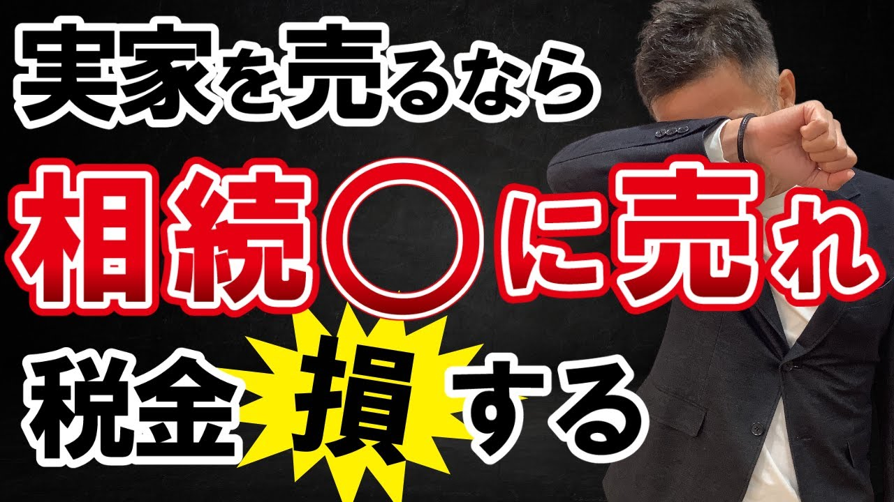
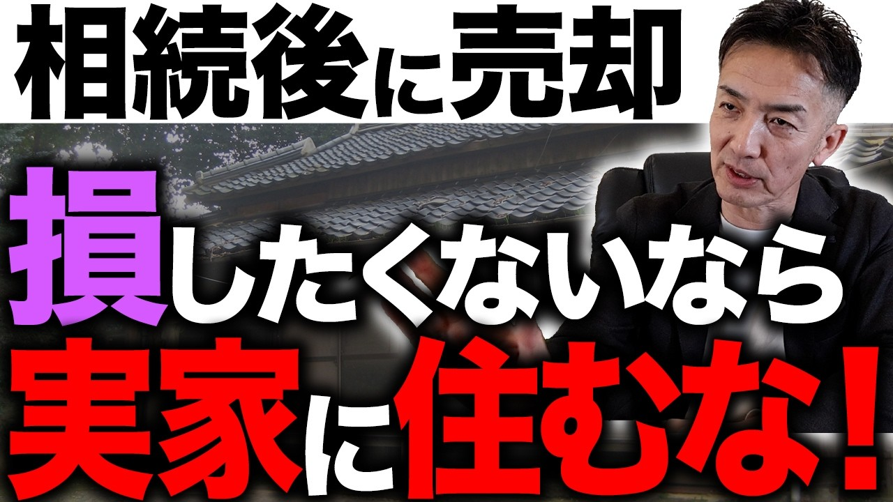

株式会社メイク 御中
YouTube運用
ご提案資料
大阪の家の売却相談を
YouTubeから集めるご提案
2026年11月6日
株式会社AdGrace
01 前提の共有
現在の集客と、YouTubeで得られる効果
チラシ
売却相談には弱い
リフォームには効くが
売却の反響は少ない
リフォームの問い合わせは
集まっていますが、買取の
相談はまだ少ない状態です。
一括査定サイト
効果が出ていない
試しの査定ばかりで
電話がつながらない
相場を知りたいだけの人が
多く、メイク様を選んでの
問い合わせは少ない状態です。
YouTube
ご提案
動画で社長の話を
聞いた人から相談が来る
売る前に自分で調べる人が
動画を見て、メイク様に
頼むと決めてから連絡します。
※前回のお打ち合わせで伺ったお話をもとに、弊社で整理したものです。
株式会社メイク御中 YouTube運用 ご提案資料 ｜ 02
02 YouTubeの一番のメリット
顧客の質の向上
一括査定サイトの問い合わせ
何社にも
試しに頼む人
相場を知りたいだけの人が多く
同じ人に何社も電話するので
話が先に進みません。
YouTubeで得られること
質の高いリードの
獲得が実現する
「実家 相続 売却」などで調べ
何本か動画を見て、社長の考えに
納得した人から連絡が来ます。
再生数は追いません。大阪で家を売りたい人に絞って届けます。
株式会社メイク御中 YouTube運用 ご提案資料 ｜ 03
03 チャンネルの方針
相続した家、借地の家、古い家の売り方に、
大阪の不動産会社の社長が答えるチャンネル
1本ごとの作り
家を売るときの悩み → 地元の不動産会社が答える
例：実家を相続した → 売る前にやること ／ 古い家 → 直して売るか、そのまま売るか
誰に
大阪に
家を持つ50代以上
戸建て・分譲マンション・
土地を持つ人と
その家族です。
何を
査定額の出し方と
手取りの差
一括査定の高い査定額の
理由まで話して、
信用してもらいます。
ゴール
買取・仲介の
売却相談
リフォーム担当3人と
不動産担当2人がいて、
直して売る相談も受けられます。
株式会社メイク御中 YouTube運用 ご提案資料 ｜ 04
04 不動産のYouTube市場
市場の広い、不動産売却のYouTube

相続・実家の売却を扱った回（再生数は2026年11月4日時点）

102.3万回

37.9万回

2.5万回
株式会社メイク御中 YouTube運用 ご提案資料 ｜ 05
05 狙う視聴者
大阪で、家や土地を売りたい人
視聴者1
家を売って住み替えたい
50〜70代
築30〜40年の戸建てや
分譲マンションを売りたい。
直して住むかも迷っている。
SEOキーワード：
戸建て 売却 築40年
マンション 売却 築30年
視聴者2
親の家や土地を
相続した50〜60代
実家や古家付きの土地を
受け継いだ。片付けも
売る段取りも分からない。
SEOキーワード：
実家 相続 売却
古家付き土地 売却
視聴者3
借地の上の家を
持っている人
地主から借りた土地に
家が建っている。地代と
承諾料のことで動けない。
SEOキーワード：
借地権 売却
借地 家 売れる
※視聴者像は想定です。メイク様に実際に来ているご相談に合わせて直します。
株式会社メイク御中 YouTube運用 ご提案資料 ｜ 06
06 企画の切り口
売る前に調べることへの答えと、地元の実例
1
一括査定の高い査定額はなぜ出る？
→ 査定額と、実際に売れる値段の違い
2
実家を相続したら、まず何をする？
→ 登記・税金・売却の順番
3
買取と仲介、どちらで売るべき？
→ 手取りと、売れるまでの期間の違い
4
古家付きで売るか、解体して売るか
→ 解体費と売値の比べ方
5
借地の家は売れる？
→ 地主の承諾と価格の決まり方
6
港区の築40年の家、いくらで売れた？相談
→ 近所で実際に売れた値段
7
直して売ると、いくら変わる？相談
→ メイク様が買い取って直した家
8
大正区で実際にあった売却相談相談
→ 相談から売却までの流れ
「相談」の回では、メイク様の地元の港区・大正区の実例と、相談の窓口を見せます。
株式会社メイク御中 YouTube運用 ご提案資料 ｜ 07
07 演者
演者の想定パターン
弊社が行うこと
ネタ出し・台本・撮影・編集・投稿まで、すべて弊社で対応
おすすめ
松茂社長がご出演
家を売るのは、人生の中でも
大きな決断です。社長が
顔を出して話す会社なら、
安心して相談できます。
社長が難しい場合
社内の担当者がご出演
不動産に詳しい担当者や、
トップの営業の方がいれば、
その方でも進められます。
使わない形
AIで社長を動かす
見た人が「AIには
頼みたくない」と感じるので、
この形は使いません。
株式会社メイク御中 YouTube運用 ご提案資料 ｜ 08
08 問い合わせまでの流れ
YouTubeからの流入を、公式LINE経由で売却相談へ
STEP 1
売却前の
情報収集
相続や査定を
調べて動画を見る
STEP 2
実例を見る
港区・大正区で
売れた例と
メイク様を知る
STEP 3
公式LINEに
登録する
続きの解説を
受け取る
STEP 4
LINEで
査定を相談
電話なしで
相場を聞ける
GOAL
買取・仲介の
売却相談へ
直して売り出す物件を紹介する回は、買いたい人のリストづくりにも使えます。
株式会社メイク御中 YouTube運用 ご提案資料 ｜ 09
09 効果
YouTubeで得られる効果
効果1
資産になる動画が
24時間回り続ける
チラシは配ったら終わりですが、
動画は公開したあとも
24時間、検索で見られ続けます。
月4本なら、1年で48本です。
効果2
既存施策の
CVRが上がる
チラシにQRコードを載せ、
査定サイトにもYouTubeの
リンクを貼ります。動画を
見てから問い合わせる人が
増えます。
効果3
AI検索で
上位に表示されやすい
ChatGPTやGoogleのAIに
家の売り方を聞いた人に、
メイク様の動画が
答えとして出やすくなります。
※GoogleのAI Overviewsが答えに使う情報源のうち、29.5%がYouTubeで、サイト別で1位です（BrightEdge調べ、2024年5月〜2025年9月）。
株式会社メイク御中 YouTube運用 ご提案資料 ｜ 10
10 運用の実績
登録者が少なくても、問い合わせにつながる実績
大阪のリフォーム会社
登録者 約720人で
YouTube経由の単月の売上
約1,000万円
| 運用先 | 成果 |
|---|---|
| 大阪のリフォーム会社 | 登録者約720人で、単月の売上約1,000万円 |
| 淡路島の買取再販会社 | 約半年の運用で、YouTube経由で物件が成約 |
| チャンネルの立ち上げ | 2022年から1年で20チャンネル以上を立ち上げ・運用 |
社名は非公開です。チャンネルは打ち合わせの場でお見せします。
株式会社メイク御中 YouTube運用 ご提案資料 ｜ 11
11 問い合わせ数の目標
1年後に、月15件の問い合わせ
3か月後
月1〜5件
最初の問い合わせが
入り始めます
半年後
月10件
反応のよい企画を増やして、
件数を伸ばします
1年後
月15件
月15件の問い合わせを
安定して得ます
※目標の数字です。出演される方や、撮影の本数によって変わります。
株式会社メイク御中 YouTube運用 ご提案資料 ｜ 12
12 運用プラン
運用プランと料金
まず始める
月2本プラン
本数
月2本
中身
企画・撮影・編集・サムネイル・分析
公式LINE
含みません
料金
月額20万円〜
おすすめ
月4本プラン
本数
月4本
中身
企画・撮影・編集・サムネイル・分析
公式LINE
軽微な運用保守（エラー時の対応、
時期に合わせた画像の差し替えなど）
料金
月額35万円〜
ご負担は撮影へのご出演のみです（社員の方のご出演も可）。
※別途、初期費用200,000円（税別）が必要です。※動画の尺や撮影の手間によって、金額が変わることがあります。
株式会社メイク御中 YouTube運用 ご提案資料 ｜ 13
13 今後の流れ
今後の流れ
01
本日
進め方のご相談
出演する方（社長か、社内の担当者か）を決めます
02
ご依頼後
企画のご提案
狙う検索語と、最初の4本の企画をお送りします
03
撮影の開始
撮影日を決めて、制作を始めます
04
運用・改善
毎月、再生数と問い合わせ数を見て、次の企画を直します
株式会社メイク御中 YouTube運用 ご提案資料 ｜ 14